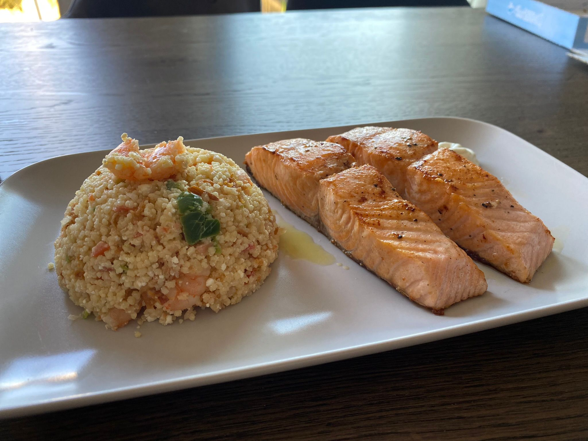
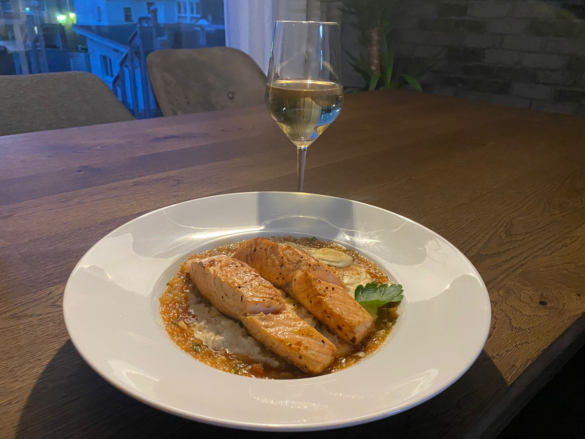
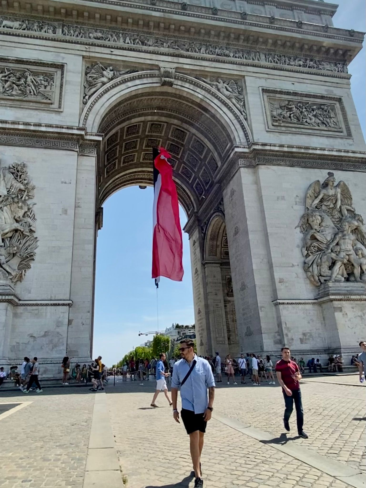

Hobby
-
Cook
 Cooking has been a beloved hobby of mine for as long as I can remember. There's something magical about creating new flavors and experimenting
with different ingredients that just keeps me coming back to the kitchen time and time again. What I love most about cooking is the ability to create
unique and unforgettable experiences for myself and others. -
Travel

Traveling and exploring new places and cultures has always been a passion of mine. I love immersing myself in different ways of life, trying new foods,
and discovering hidden gems that only locals know about. Over the years, I've been fortunate enough to visit more than 20 countries, each one offering
its own unique set of experiences and adventures. I've learned so much about the world and myself through my travels